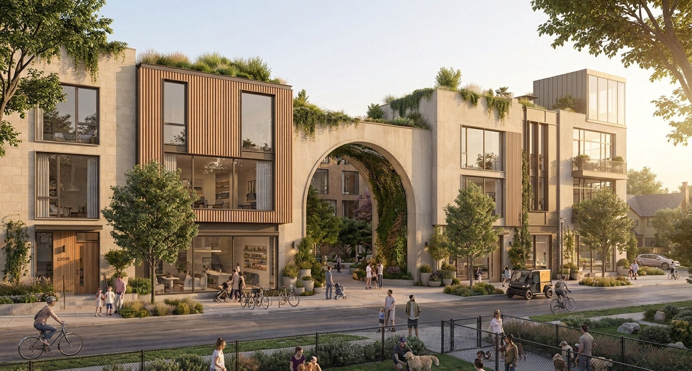
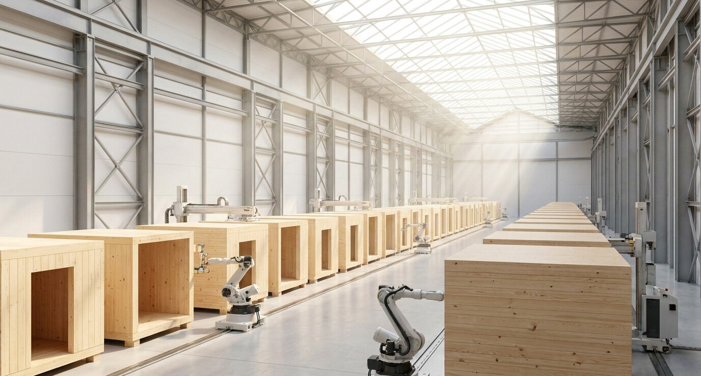

Now City Homes: The Anchor Buyer Strategy
Why this document exists: Now City Homes went public on the investor site this week as the platform's product engine. This is the working version: the strategy with the partner names in, the honest status of each workstream, the budget behind it, and the open questions we still owe ourselves answers on. Like everything on this shelf, it is built to compound; add addenda as factory conversations, code reviews, and framework negotiations teach us things.

1 · The thesis, stated for ourselves
The technology to build great housing in factories exists and has existed for decades. Offsite construction share has stayed roughly flat around 4% while ~$4B of venture capital (Katerra) and the industry's most famous modular project (461 Dean, nearly four years) failed on the same missing input: demand certainty. Factories die on project-by-project pipelines. They compound on order books.
Where an anchor buyer exists, the model works. Public Housing Sweden's Kombohus program delivered 10,000+ units from a standardized catalog roughly 5 months faster and ~18% cheaper on contract. The Department of Defense is currently scaling a domestic factory supply chain against a ~$20B annual construction budget, targeting ~30% schedule and ~20% cost gains.
Honesty note for our own use: Kombohus figures are well documented; the DoD numbers are program targets, not results. We cite them as evidence of the anchor-buyer pattern, not as proof of achieved outcomes, and we should keep that framing in every room.
2 · The product: one chassis, a catalog of neighborhoods
The heart of the system is the single-stair Point Access Block: ~6.5% of the floor plate in circulation against ~13% for a double-loaded corridor, 93% efficient plates, corner and through-units with daylight and cross-ventilation on two sides, and a geometry that is exactly what a factory wants to build: standardized core, narrow repeatable modules, minimal circulation. The PAB is the hero chassis, deliberately one part of a larger catalog so the strategy never rests on a single building type:
- The Now City Block. The standardized single-stair mid-rise. Flexes interior mix from compact units for students and seniors to 3- and 4-bedroom family homes without changing shell, core, or tooling. Stands alone or chains into 4-to-6-story courtyard blocks.
- Now City Row Houses. Door-on-the-street missing middle for the peri-urban edge, integrated ground-floor ADU with its own entrance: multigenerational living, supplemental income, aging in place. Same envelope and delivery systems, reformatted.
- Contextual Urban Tower. The density anchor, sited to protect neighborhood light and views, never tower-next-to-tower, with shared social floors interweaving the vertical stack.
- The small-unit model. Runs inside the Block chassis: trading private square footage for public vitality, designed for what deck two called the regrounded achiever. This is a unit-mix strategy, not a fourth building.
Standardized core delivers cost, schedule, and quality. Contextual skin delivers belonging. Passive House-level performance is engineered into the chassis once and replicated; the standardized product is also the substrate for the AI layer, since every repeat deployment compounds the platform's optimization intelligence (unit mix, daylighting, factory-load scheduling), with human review non-negotiable.


3 · The regulatory window, with verification homework
| Jurisdiction | Status as we state it | Verify before relying |
|---|---|---|
| Seattle | Six-story single-stair permitted since 1977; safety record exceeds national averages. | Settled; keep the citation handy for skeptics. |
| Washington | Statewide single-stair legalized (SB 5491, 2023); 2026 elevator and scissor-stair reform (SB 5156) further cuts core costs. | Confirm SB 5156 effective dates and local adoption timing before pricing cores on it. |
| Oregon | Four-story single-stair as a clear and objective right; enhanced life-safety tier unlocks 5-6 stories and roughly 25% more density. | Confirm the OSSC 2025 Appendix Q citation and the exact conditions of the enhanced tier with our code consultant; this is the Edgewater-critical item. |
| California | Reform in motion; State Fire Marshal recommendations delivered to the legislature in 2026. | Track adoption; do not put CA volume in any committed pipeline yet. |
4 · Delivery: the partnership stack (this is the confidential part)
Our industrialized construction partner is Maxumal, a Western-U.S. company with a patented building system capable of delivering the catalog at scale. On every public surface, including the investor site, they are described only as "an established industrialized construction partner in the Western U.S. with a patented system." That stays true until a framework agreement is signed and Maxumal consents to being named. Around them we orchestrate the stack: timber sourcing and manufacturing in the Northwest, logistics, and supply nodes positioned so the chassis deploys where market fundamentals are strongest.
The asset-light logic, which is also our answer to the Katerra question: zero capital drain on proprietary factories, geographic flexibility, and a supply chain insulated from localized labor shortages. We are not building a factory; we are the demand side that makes factories investable.

What the Maxumal framework agreement needs to contain before it is real (draft checklist for the negotiation):
- Catalog pricing by chassis and unit mix, with indexed escalators, honest tolerances, and a mechanism for repricing as volume commitments grow.
- Capacity reservation terms: what volume we can call, on what notice, and what our committed floor is (this is where anchor-buyer credibility is earned or lost).
- Quality and performance spec: Passive House-level envelope as default, with factory QA data flowing into our intelligence layer.
- Exclusivity scope, if any: by catalog, by territory, or none; we should not trade away optionality cheaply.
- IP boundaries: their patented system, our catalog designs and data. Clean lines now prevent ugly arguments later.
5 · The order book: four demand sources, and the artifacts that convert them
A factory believes an order book, not a vision. We build one four ways at once:
- The base load we control. Edgewater's ~1,000 homes across four phases, specified and sequenced by the master developer itself. Every district the platform wins adds a thousand-home block. No sales cycle between the platform and its own demand.
- Anchor customers on framework terms. The Kombohus move translated: cities, housing authorities, universities, and employers adopting a pre-engineered, pre-priced catalog under framework agreements. The coalition method is the sales channel; it is already opening these doors district by district.
- The underwriting channel. Every external deal team on the Upside Explorer is a qualified buyer in formation: the software proves in their own numbers that the chassis makes their project pencil, then routes the order to the catalog. Software distribution and demand aggregation are the same motion.
- Chartered pipeline volume. Framework supply agreements with West Coast TODs and large master-planned communities that need thousands of standardized, high-performance units on committed schedules.
The honest read, which we published on the investor site deliberately: framework agreements are 12-to-24-month sales cycles with sophisticated counterparties, and they sign against artifacts, not intentions. The four artifacts, funded by the $0.5M product line in the raise:
| Artifact | Budget | Why it converts |
|---|---|---|
| Catalog schematic package + Passive House chassis engineering | ~$250K | Pre-engineered: a buyer can see, price, and permit what they are ordering. |
| Jurisdiction code-pathway packages (OR, WA first) | ~$100K | Pre-approved: the code argument is done once, cited everywhere. |
| Factory framework agreement, diligence and legal | ~$75K | Pre-priced: framework factory terms turn our quotes into commitments. |
| Anchor-buyer partnership development | ~$75K | Pre-proven: pilots and LOIs convert the pipeline into a book. |
The 18-month proof points, as published: months 0-6, schematic package commissioned and factory framework term sheet in negotiation; months 6-12, OR/WA code packages complete and first anchor framework LOI in hand; months 12-18, Edgewater Phase 1 order specified with Maxumal and at least two external framework LOIs in diligence. Until those exist, chartered volume is a pipeline, and we report it as one.
6 · Economics: how Homes pays the platform
The platform is paid three ways on the same order book: as developer of its own districts (the master developer pro forma: $2.5M development management agreement across five pre-construction milestones, $300K annual advance, master developer and development fees ballooning at phase entitlements, ~$39M in fees on Edgewater over 2026-2035 before promote); as product owner on catalog deployments beyond our districts; and as the intelligence layer across the pipeline via nowcity.ai.
What is modeled versus what is not, stated plainly:
- Modeled: the district fee engine (14 July 2026 pro forma), and the 10-year platform projection on the invest page (~$112M cumulative fees across 4 owned districts + advisory practice). Solid enough for investor conversations, clearly footnoted as projection.
- Not yet modeled: product-owner economics on external catalog orders (per-unit margin, licensing versus fee-for-service, and how the Maxumal split works), and software revenue at scale. This is the biggest open analytical gap in the strategy, and we should not improvise numbers in meetings before we build it.
7 · Market, for the record
As published, anchored where public data exists and labeled where it is ours: TAM ~$115B/yr U.S. private multifamily construction (Census) against a ~4M home national shortage; SAM ~$20-25B/yr West Coast multifamily (WA/OR/CA at ~20% of national activity, our assumption), where single-stair reform, high-cost labor, and in-migration make the catalog most valuable; SOM ~$250M/yr by year 10, roughly 1% of SAM: three to five districts in delivery plus catalog units into partner pipelines.
8 · What lives where
- Public (invest site, section 03/03b): the anchor-buyer thesis, the catalog, the single-stair unlock, the order book, the funded product line, the fee projection. Maxumal unnamed. No IRR claims from the concept decks (the "38% Co-GP IRR / 2.7x" figures in the Standardized Sanctuary deck were NotebookLM inventions and were rejected).
- Internal (this shelf): partner names, framework checklist, verification homework, unmodeled economics, and the addenda as they accumulate.
- Assets: the July 15 render set (13 images, watermark-cleaned) in the project images folder and on the invest site; both concept decks in the Now City Homes project folder.
9 · Open questions
- Does Now City Homes stay a platform program, or become its own entity and brand with its own cap table? (Affects the raise story, the Maxumal negotiation, and eventual product-revenue accounting.)
- What is the product-owner revenue model on external orders: license the catalog, take a fee per unit, or joint-venture the deployments? Needs the modeling flagged in section 6 before we choose.
- How much exclusivity, if any, do we want from and give to Maxumal, and in exchange for what committed floor?
- Is the Edgewater Phase 1 order the pilot, or do we want a smaller demonstration build (a single Block or row-house run) earlier for the artifact shelf?
- Who is the first anchor-customer conversation: Salem housing authority, the university, or an employer partner? The coalition map should nominate one door for the next 90 days.
Addenda
None yet. Add dated entries here as factory conversations, code reviews, and framework negotiations produce decisions.